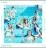

곡설명

드디어 컴백, 'TWICE' 4월 25일 미니 2집 [PAGE TWO] 발매. 'TWICE'의 두 번째 이야기가 시작된다.
'TWICE'만의 건강하고 발랄한 매력을 한층 더 쌓아 올린 '출구 없는 회전문' 걸그룹의 당찬 발걸음.
음원 역주행, 신인상, 7만장에 육박하는 앨범 판매량, 걸그룹 데뷔곡 기준 역대 최고 Youtube 조회수까지. 작년 하반기를 그야말로 뜨겁게 달궜던 'TWICE'가 드디어 4월 25일 미니 2집 [PAGE TWO]를 발매하며, 이들의 두번째 이야기를 시작한다.